COMP2521 - Data Structures and Algorithms
Week 1: Algorithm Analysis
Algorithm Analysis:
Terminology:
- Empirical analysis — involves implementing and running the algorithm and plotting a graph of time taken vs. input size
- Theoretical analysis — involves determining running time as a function of input size, n.
independent of hardware and programming language (we can analyse pseudocode in terms of the number of primitive operations* — maximised in the worst case)
- Primitive operations — accessing an array index, calling functions, evaluating expressions, etc.
Big-O Notation (Time Complexity):
Formal definition: if there exists positive constants c and b such that f(n) ≤ cg(n) holds for all n > b, then f(n) is O(g(n))

It is true that "2n is O(n²)", however we want the smallest class of functions, so we say "2n is O(n)"
- Big O — upper limit (worst case) f(n) ≤ cg(n)
Big Θ — average range f(n) ≥ cg(n)
Big Ω — lower limit (best case) c'g(b) ≤ f(n) ≤ c''g(n)
The worst case time-complexity is generally the most important to discuss
- Polynomials: for f(n) with degree d, f(n) is O(nᵈ)
- For finding the worst case in recursive algorithms, we must understand the logic and work out how many steps are taken to reach the base case
- Complexity classes:
N — problems computable in polynomial time
NP — problems only computable in exponential time, so no P algorithm is known ("non-deterministic polynomial time on a theoretical Turing Machine")
"tractable" — has a polynomial-time algorithm
"intractable" — only exponential-time algorithms are known
*It has been proved that if some NP class problem can be solved in polynomial time, then ALL NP class problems become P problems
- Generate and test algorithms:
Useful when it is simple to generate new states and test whether they are a solution.
This guarantees we either find a solution, or prove none exist.
Eg. Checking primality by generating 2 to n-1 numbers and testing them
- Big-O is less about the exact number of operations and more about how the number changes with respect to problem size. A function with O(1) complexity (constant time) could take 0.000001 seconds to execute or two weeks to execute.
Time-complexity for different operations on common data structures:
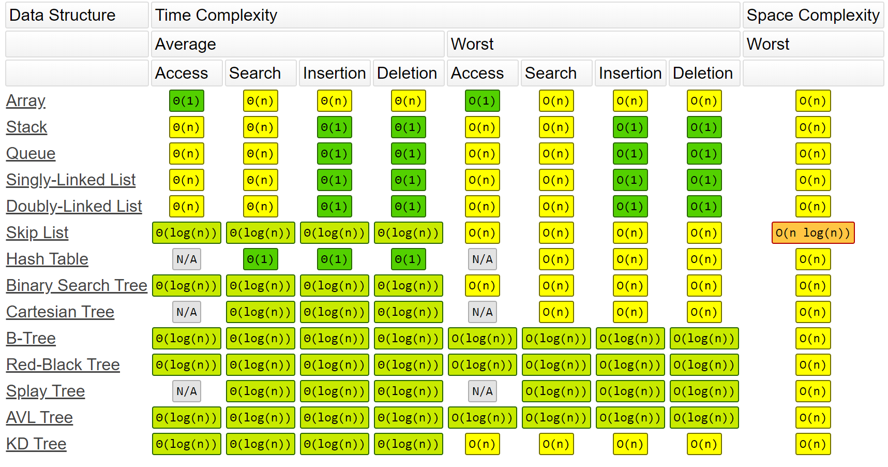
Examples:
O(1)
void swap(int a[], int i, int j) {
int tmp = a[i];
a[i] = a[j];
a[j] = tmp;
}
O(n)
for (int i = 0; i < n; i++) {
}
O(n²)
for (int i = 0; i < n; i++) {
for (int j = 0; j < n; j++) {
}
}
O(logn)
for (int i = 0; i < n; i *= 2) {
// Some O(1) statements
} // Total: O(log₂n)
// Eg. for n = 100, the loop will execute log₂(100) times, which is 6 or 7 times
Week 2: Compilation and ADTs
Abstract Data Types:
- Abstract data type:
Abstract data types provide a separation between the interface and implementation. The interface only presents high-level functions that can be performed and their pre-conditions and post-conditions without us being concerned with how they are implemented. Users of the ADT see and use only the interface, so they are completely unaware of the underlying implementation of it.
- The interface (header file) provides just the function signatures/prototypes and a description of their semantics
- Collections:
Many ADTs are a collection of items, which might be simple types with an associated key.
- Collections are categorised in terms of structure: linear, branching, cyclic, or in terms of usage: set, matrix, stack, queue, search-tree, dictionary
- Typical functions: create(), insert(), remove(), find(), display(), etc.
Set ADT example:
A typical abstract set data type requires the following functions:
Set newSet()void freeSet(Set s)void displaySet(Set s)void setInsert(Set s, int data)void setRemove(Set s, int target)bool setIsMember(Set s, int target)Set setUnion(Set s, Set t)Set setIntersection(Set s, Set t)int setCardinality(Set s)
ADTs are also expected to implement error-handling to check that things like pre-conditions, post-conditions and whether or not the input is valid value.
Time-complexities for a set implementation using various underlying data structures:

As the person implementing an abstract data type for other uses, after you decide what functions you want to supply, you go through each possible implementation and compare the set of time-complexities for each implementation and then pick the appropriate implementation based on which functions are most important to the specifications.
Week 3: Trees I
Tree Data Structures:
- Trees — connected graphs with no cycles where any two nodes are connected by exactly one unique path. Each node holds data and has links to child nodes
- Binary trees — recursive definition: "a binary tree is a tree that is either empty, or consists of a node with two binary subtrees"
- Binary search trees — every node is the root of 0-2 subtrees, where the left subtree contains all values lower than the root value and right subtree contains all values greater than the root value
- Balanced tree — has minimal height possible for the given number of nodes (for n nodes, the height is log(n))
- Perfectly balanced tree — when the difference between the number of nodes in the subtrees of every node is no more than 1
abs(countNodes(t → left), countNodes(t → right)) ≤ 1
- Degenerate tree — has maximal height possible for the given number of nodes (linear structure)
Tree structure:
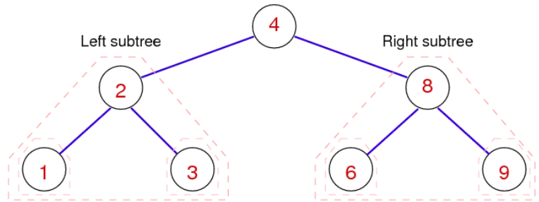

Tree 'indexes':

Binary Search-Trees:
- The time-complexity for tree algorithms is typically O(height of tree), and for a balanced binary search tree, height = log(n).
- Example: consider the balanced binary search tree corresponding to the sorted array: [2, 5, 10, 12, 14, 17, 20, 24, 29, 30, 31, 32]
- All child nodes to the left are less than the parent, all child nodes to the right are greater than the parent.-
- Every node has at most 2 child nodes
- If the target value isn't found in the tree, then it is inserted where it was failed to be found.
- The structure of the tree depends on the order of insertion of the elements
- Each node contains a pointer to the root node of its left subtree and a pointer to the root node of its right subtree
Possible struct declaration:
typedef struct BSTNode *Tree
struct BSTNode {
int data
BSTNode *left
BSTNode *right
}
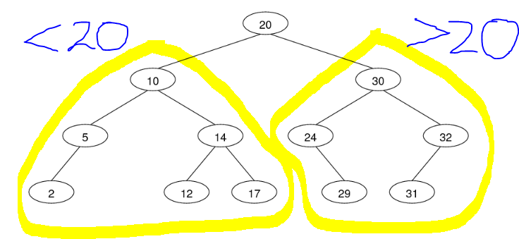

Tree Algorithms:
Tree traversal:
Preorder NLR — root → left subtree → right subtree
void printPreorder(BSTree t) {
if (t == NULL) return;
printf("%d ", t -> value);
printPreorder(t -> left);
printPreorder(t -> right);
}
Iterative alternative, using a stack
void printPreorder(BSTree t) {
Stack stack= StackNew();
StackPush(stack, t);
while (StackSize(s) > 0) {
BSTree curr = StackPop(stack);
printf("%d ", curr -> value);
if (curr -> right != NULL) StackPush(curr -> right);
if (curr -> left != NULL) StackPush(curr -> left);
}
StackFree(stack);
}
Inorder LNR **— left subtree → then root → then right subtree
void printInorder(BSTree t) {
if (t == NULL) return;
printInorder(t -> left);
printf("%d ", t -> value);
printInorder(t -> right);
}
Postorder LRN **— left subtree → right subtree → then root
void printPostorder(BSTree t) {
if (t == NULL) return;
printPostorder(t -> left);
printPostorder(t -> right);
printf("%d ", t -> value);
}
Level-order **— root → all its children from left to right → then their children from left to rightand so on
void printLevelOrder(BSTree t) {
Queue q = QueueNew(); // Stack contains BSTree nodes
QueueEnqueue(q, t);
while (QueueSize(s) > 0) {
BSTree curr = QueueDequeue(q);
printf("%d ", curr -> value);
if (curr -> left != NULL) QueueEnqueue(curr -> left);
if (curr -> right != NULL) QueueEnqueue(curr -> right);
}
QueueFree(q);
}
Tree Properties:
Searching for node:
bool BSTSearch(BSTree t, int target) {
if (t == NULL) return false;
if (t -> value == target) {
return true;
}
else if (target < t -> value) {
return BSTSearch(t -> left, target);
}
else if (target > t -> value) {
return BSTSearch(t -> right, target);
}
}
Counting nodes:
int count(Tree t) {
return t == NULL ? 0 : 1 + count(t -> left) + count(t -> right);
}
Getting the height:
int TreeHeight(Tree t) {
if (t == NULL) return 0;
if (t -> left == NULL && t -> right == NULL) return 0; // Do I need this?
if (t -> left == NULL && t -> right != NULL) return 1 + TreeHeight(t -> right);
if (t -> right == NULL && t -> left != NULL) return 1 + TreeHeight(t -> left);
return 1 + max(TreeHeight(t -> left), TreeHeight(t -> right));
}
Tree Maintenance:
Tree JoinTree(Tree t1, Tree t2) {
if (t1 == NULL) return t2;
if (t2 == NULL) return t1;
Tree minNode = t2;
Tree minNodeParent = NULL;
while (minNode -> left != NULL) { // Find the minimum node of t2
minNodeParent = minNode;
minNode = minNode -> left;
}
if (minNodeParent != NULL) {
minNodeParent -> left = minNode -> right;
minNode -> right = t2;
}
minNode -> left = t1;
}
Right rotation:
Moves the left child to root, assigning the original root as the left child's right subtree
BSTree rotateR(BSTree t) {
if (t == NULL) return NULL;
BSTree pivot = t -> left;
if (pivot == NULL) return t;
t -> left = pivot -> right;
pivot -> right = t;
return pivot;
}
Left rotation:
Moves the right child to root, assigning the original root as the right child's left subtree
BSTree rotateR(BSTree t) {
if (t == NULL) return NULL;
BSTree pivot = t -> right;
if (pivot == NULL) return t;
t -> right = pivot -> left;
pivot -> left = t;
return pivot;
}
Inserting at leaf:
Insertion algorithm terminates when current node is NULL, which means we have reached a suitable leaf position
BSTree BSTreeInsert(BSTree t, int val) {
if (t == NULL) { // Reached leaf node (terminating case)
BSTree newLeaf = malloc(sizeof(struct BSTNode));
newLeaf -> value = val;
newLeaf -> left = NULL;
newLeaf -> right = NULL;
return newLeaf;
}
if (t -> value == val) return t; // Tree already contains the value. Just return
if (val < t -> value) { // Go insert in the left subtree
t -> left = BSTreeInsert(t -> left, val);
} else if (val > t -> value) { // Go insert in the right subtree
t -> right = BSTreeInsert(t -> right, val);
}
return t;
}
Inserting at root:
Like insertion at the leaf but requires rearrangement of the tree for each insert. Recent entries are close to the root so retrieving these are quicker than if we were to insert at the leaf everytime.
- Insert new node as leaf
Lift the new node to the root by a series of rotations
BSTree BSTreeInsert(BSTree t, int val) {
if (t == NULL) {
BSTree newLeaf = malloc(sizeof(struct BSTNode));
newLeaf -> value = val;
newLeaf -> left = NULL;
newLeaf -> right = NULL;
return newLeaf;
}
if (val < t -> value) {
t -> left = BSTreeInsert(t -> left, val);
return rotateRight(t);
}
else if (val > t -> value) {
t -> right = BSTreeInsert(t -> right, val);
return rotateLeft(t);
}
// If the execution reaches here, the value probably already exists in the tree. Do nothing
return t;
}
Time-complexity: O(height)
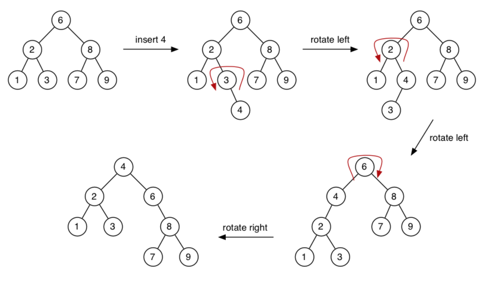
- Deleting a node:
Do a regular search for the target node and then handle deletion by cases once reached:
- Target has no subtrees — simple deletion
- Target has 1 subtree — replace target with its child
- Target has 2 subtrees — call mergeTrees to merge the target's children to replace the deleted target
Target doesn't exist — do nothing and return
Tree deleteNode(Tree t, int target) {
if (t != NULL) {
if (t -> value > target) { // Target is somewhere in the left subtree
deleteNode(t -> left, target);
}
else if (t -> value < target) { // Target is somewhere in the right subtree
deleteNode(t -> right, target);
}
else if (t -> value == target) { // Reached the target node
if (t -> left != NULL && t -> right != NULL) { // Both subtrees exist
Tree t1 = t -> left;
Tree t2 = t -> right;
free(t);
return mergeTree(t -> left, t -> right);
}
else if (t -> left != NULL) { // Only the left subtree exists
Tree ret = t -> left;
free(t);
return ret;
}
else if (t -> right != NULL) { // Only the right subtree exists
Tree ret = t -> right;
free(t);
return ret;
}
else { // No subtrees. Simple deletion
free(t);
return NULL;
}
}
}
return t;
}
Rebalancing:
Logic to rebalance any BST:
- Set the median node as the new root using the
partition() function
Recurse through each subtree, setting the median node as the new root for every single node
Time-complexity of rebalancing is O(N) because each node is visited
We can choose to rebalance periodically (eg. after every 20 insertions), or whenever the tree's imbalance exceeds a threshold
Tree Rebalance(Tree t) {
if (countNodes(t) >= 3) {
Tree newRoot = Partition(t, n / 2); // Sets the node at index n/2 (the median node) as the new root
t -> left = Rebalance(t -> left); // Rebalance both subtrees
t -> right = Rebalance(t -> right);
}
return t;
}
Partition:
Sets the node at a chosen index to be the new root (using a sequence of tree rotations to lift the node at the chosen index up to the root).
- Count the nodes in the left subtree, if it is equal to the target index, then the current node is the one we were after — just return t
If the index is greater than the number of nodes in the left subtree, then we know that the target node is somewhere in the
Tree Partition(Tree t, int newRootIndex) {
int leftNumNodes = countNodes(t -> left);
if (leftNumNodes > newRootIndex) { // The rootIndex is somewhere in the left subtree
t -> left = Partition(t -> left, newRootIndex);
t = rotateRight(t); // Rotate right, to lift the new median node up to root
}
else if (leftNumNodes < newRootIndex) { // The rootIndex is somewhere in the right subtree
t -> right = Partition(t -> right, newRootIndex - leftNumNodes - 1);
t = rotateLeft(t); // Rotate left, to lift the new median node up to root
}
return t;
}
Week 4: Trees II — Specialised Search Trees
- The BST shape depends on the order of insertion.
The best case is that the values are inserted in preorder, so median value first, then the median of the left half, then the median of the right half, and so on
The worst case is that the values are inserted in order or reverse order, forming a degenerate tree
- Randomised trees makes worst case performance unlikely
- Splay-trees, randomised trees and occasional rebalance trees have worst case of O(N), but ideally, we want O(log(n)).
AVL trees fix imbalances as they arise, therefore maintaining a height of log(n). Repairs are done locally and not on the overall tree
2-3-4 trees use varying-sized nodes to assist balance
Splay Trees:
- Like BST but new entries are always inserted at the root and searched entries are always brought up to the root (this is called "splaying"). This behaviour models caching, which means recently interacted with nodes are quicker to retrieve
- The insert for splay trees modifies the standard
insertAtRoot() function. Considers parent-child-grandchildren links and performs a sequence of rotations depending on the orientation of parent to child to grandchildren. This tends to improve tree balance more than the standard insertAtRoot() function
- Amortised cost — allows very quick retrieval of recent nodes but at the cost of a slower insertion and search strategy, but splaying also tends to improve the balance of the tree
Search operations are still O(n) since the tree is explicitly maintaining balance.
Target node belongs somewhere in the grandchildren subtrees — zig-zig and zig-zag cases:
- Target node is in the left child's left child — zig-zig:
rotateRight(t) twice
- Target node is in the left child's right child — zig-zag:
rotateLeft(t → left) then rotateRight(t)
- Target node is in the right child's left child — zig-zag:
rotateRight(t → right) then rotateLeft(t)
- Target node is in the right child's right child — zig-zig:
rotateLeft(t) twice
If the target node belongs in the left
// Lifts a target node to the root by a sequence of rotations depending on cases
struct node *splay(struct node *root, int target) {
if (root == NULL || root->key == key) return root; // Terminating case: either root is NULL root contains key
// Target is somewhere in left subtree
if (root -> value > target) {
if (root -> left == NULL) return root; // Target must be in the left child, but there is no left child, so the key must not exist
// Dealing with zig-zig and zig-zag:
if (root -> left -> value > target) { // Target must belong somewhere in the left child's left child - Zig-Zig
root -> left -> left = splay(root -> left -> left, key); // This call to splay recursively lifts the target node to become the root of the left-left node
root = rightRotate(root); // Do FIRST rotation on the parent node
}
else if (root -> left -> value < target) { // Target must be somewhere in the left child's right child
root -> left -> right = splay(root -> left -> right, target); // This call to splay recursively lifts the target node to become the root of the left-left node
if (root -> left -> right != NULL) // If the the left child's right child exists, then call rotateLeft on the left child
root -> left = leftRotate(root -> left);
}
return (root -> left == NULL) ? root: rightRotate(root); // Do SECOND rotation, only if the right subtree exists
}
// Target is somewhere in the right subtree
else {
if (root -> right == NULL) return root; // Right subtree doesn't exist so the target doesn't either
// Dealing with zig-zig and zig-zag:
if (root -> right -> value > target) {
root -> right -> left = splay(root -> right -> left, target); // Lifts the target to the root of the right child's left subtree
if (root -> right -> left != NULL)
root -> right = rightRotate(root -> right);
}
else if (root -> right -> value < target) {
root -> right -> right = splay(root -> right -> right, target); // Bring the key as root of right-right and do first rotation
root = leftRotate(root);
}
return (root->right == NULL)? root: leftRotate(root); // Do second rotation for root
}
}
Time-complexity: O(n) — but a better average case usually
AVL-Trees:
- AVL trees fix imbalances as soon as they occur by checking the height of left and right subtrees in its insertion function
AVLInsert(). An imbalance is when abs(leftSubtreeHeight - rightSubtreeHeight) > 1
- The maximum height difference between any node's subtrees is 2, since the precondition is that we are given an AVL height balanced tree
- Getting the height of a tree may be expensive, so AVL trees tend to have poorer performance for insertion operations as a tradeoff for a O(logn) search function.
It may help to augment the struct declaration with more fields that keeps track of height differences, for example.
Tree AVLInsert(Tree t, int val) {
if (t == NULL) return newTree(val);
if (t -> value == val) return t;
if (t -> value > val) {
t -> left = AVLInsert(t -> left, val);
}
else if (t -> value < val) {
t -> right = AVLInsert(t -> right, val);
}
int leftHeight = getHeight(t -> left);
int rightHeight = getHeight(t -> right);
if (leftHeight - rightHeight > 1) {
if (val > (t -> left -> data)) {
t -> left = rotateLeft(t -> left);
t = rotateRight(t);
} else {
t = rotateRight(t);
}
}
else if (rightHeight - leftheight > 1) {
if (val < (t -> right -> data)) {
t -> right = rotateRight(t -> right);
t = rotateLeft(t);
} else {
t = rotateLeft(t);
}
}
return t;
}

2-3-4 Trees:
2-3-4 trees have special nodes:
- 1-value node: can have 2 subtrees
- 2-value node: can have 3 subtrees
- 3-value node: can have 4 subtrees
In 2-3-4 trees, all leaves are equidistant from the root, meaning all leaves are on the same bottom level. The insertion function for 2-3-4 trees will always maintain height balance
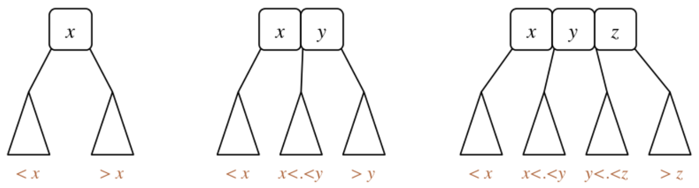
2-3-4 Search:
Tree Search234(Tree t, int item) {
if (t == NULL) return t;
int slotIndex = 0;
while (slotIndex < (t -> type- 1) && item > t -> nodeValues[slotIndex) {
slotIndex++;
}
if (item == t -> nodeValues[slotIndex]) {
return t;
} else {
return Search234(t -> children[slotIndex], item)
}
}
Time-complexity:
- Worst case: all nodes are 2-nodes, so O(log2(n)). Remember, 2-3-4 trees are always height balanced
- Best case: all nodes are 4-nodes, so O(log4(n))
Possible struct declaration
struct treeNode {
int type;
int nodeValues[3];
struct treeNode *children[4];
};
234Insert
- Find where to insert using Search()
- If not full, insert into the node's
nodeValues[ ] and promote its type, type++
- If full:
- Push the middle node
nodeValues[1] into the parent's nodeValues array, then split into two 2-nodes, storing nodeValues[0] and nodeValues[1] and inserting the new entry into the correct 2-node
- If the parent is also full, then the parent must be split as well by the same process
- If the root node is full, then it must be split by the same process but create a new 2-node as the new root
2-3-4 Insertion
Just watch the visualisation (implementation out of the scope of this course): https://people.ok.ubc.ca/ylucet/DS/BTree.html):
Tree Insert234(Tree t, int item) {
if (t == NULL) return newTree(item);
Tree insertionNode = Search234(t, item);
Tree parentNode = parent of insertionNode;
if (insertionNode -> type < 4) {
insertionNode -> type++;
}
else {
int promoteVal = insertionNode -> nodeValues[1];
Tree newLeaf1 = newTree(insertionNode -> nodeValues[0]);
Tree newLeaf2 = newTree(insertionNode -> nodeValues[2]);
if (item < newLeaf1) {
Insert234(newLeaf1, item);
}
else {
Insert234(newLeaf2, item);
}
if (parentNode == t) {
}
Insert234(parentNode, promoteVal);
while(parentNode -> order == 4) {
continue promoting nodes up
}
if (parentNode == root of tree && parent -> order == 4) {
split root, malloc a new node and set that as the new root of the entire tree
}
}
}
Week 5: Graphs I
Graph Data Structures
A graph is a set of Vertices V and a set of edges E (a subset of the Cartesian product V × V)
Graph Theory basics:
- A graph with V vertices has at most V(V-1)/2 edges
- A graph is dense if |E| is closer to V²
A graph is sparse if |E| is closer to V
- Connected vertices are called adjacent. The edge between them is incident on them
- Degree: number of edges incident on a vertex
- Walk: a sequence of vertices to travel from one vertex to another
- Path: a walk with no repeated vertices (hence no repeated edges)
- Euler path: a path that includes all edges exactly once, possibly revisiting used vertices
- Hamiltonian path: a path that includes all vertices exactly once, possibly revisiting used edges
- Circuit: a path that ends on the same vertex
- Euler circuit: a circuit including all edges exactly once, possibly revisiting used vertices
- Hamiltonian circuit: a circuit including all vertices exactly once, possibly revisiting used edges
Graph Types:
- Connected graph: there exists a path between any two vertices
- Complete graph: **there is an edge from every vertex to every other vertex (|E| = V(V-1)/2, which is the maximal amount of edges a graph can have)
- Tree: connected subgraph of the graph containing no possible circuits
- Spanning tree: a tree containing every vertex in the original graph
- Minimum spanning tree: a spanning tree where the sum of all weights is minimised.
- Shortest path spanning tree: a spanning tree where the weighted paths from a source vertex to every other vertex is minimised
- Clique: a complete graph which is a subgraph of the original graph
- Undirected graph: any graph with only bidirectional relations
- Directed graph: any graph with unidirectional relations
- Weighted graph: any graph where edges have an associated value (weight)
- Multi-graph: any graph that contains parallel edges between vertices
Possible struct declaration:
struct graphRep {
int numNodes;
int numEdges;
int **edgeMatrix; // Using an adjacency matrix to store all connections. We could alternatively use an array of edges or an adjacency list
};
Graph Data Structures:
A graph is representable as an: array of edges, adjacency matrix and adjacency list. These representations each provide sufficient information to reconstruct the same graph diagrammatically. The choice of which underlying data structure to use for a graph ADT depends on which operations we want to optimise the most.
Array of edges:
{(v1, w1), ..., (vn, wn)} — array of 2-tuples. Could also use 3-tuples to store the weight of the edge.
Vertex tuples are ordered for directed graphs, to encode direction. In undirected graphs, (1, 2) is equivalent to (2, 1)
Time-complexities of functions:
- Initialisating a new graph: O(1)
- Insertion: O(E) — loop through until the end to check the edge doesn't already exist
- Deletion: O(E) — loop through, delete target, then shift all elements thereafter down by 1 index
Note: if we maintain an ordered array of edges, then the time complexity of insertion and deletion can be reduced to O(log(E)) with a binary search algorithm
Space-complexity: O(E)
Adjacency matrix:
V × V matrix — where each coordinate in the matrix correspondeds to an edge's existence (and its weight, conveniently).
Undirected graphs have a symmetric matrix while directed graphs usually have a non-symmetric matrix
Time-complexities of functions:
- Initialisating a new graph: O(V²) — for setting all coordinates to 0
- Insertion: O(1) — assign a new value to a coordinate
- Deletion: O(1) — reset a coordinate to 0
Space-complexity: O(V²)
Adjacency list:
Array of linked list heads — for each vertex, store a linked list of its neighbour vertices.
Time-complexities of functions:
- Initialisating a new graph: O(V) — Initialise all linked list heads to
NULL
- Insertion: O(1) — access index and insert the vertex value into the linked list
- Deletion: O(E) — search for the target value in the list
Space-complexity: O(V+E) — O(V) for the array size, O(E) for the size of the all the linked lists attached to each array index
Graph Algorithms:
Graph Traversal:
Two traversal methods are depth-first search and breadth-first search. Both use a bool visited[] array to prevent the algorithm from returning to an already visited node
Depth-First Search:
Follows one single path to completion and then considers other paths one step back and so on.
Can be implemented recursively or iteratively (using a stack structure)
A skeleton for a recursive DFS algorithm:
// Expects all elements of the visited array to be intialised to false
void DepthFirstSearch(Graph g, int start, bool visited[]) {
visited[start] = true;
for (int i = 0; i < g -> numVertices; i++) {
if (isAdjacent(start, i) && visited[i] == false) {
depthFirstSearch(g, i, visited);
}
}
}
// Could modify this function to do things like:
// - print all elements
// - return a bool if a path exists from src to dest, etc.
// - pass a int pred[] array to track predecessor nodes (which lets us then trace and print paths from src to dest)
Time-complexity: O(V+E) — each vertex is accessed, and possibly every edge
Iterative DFS using a stack ADT:
void DepthFirstSearch(Graph g, int src) {
bool visited[g -> numVertices];
for (int i = 0; i < g -> numVertices; i++) visited[i] = false;
Stack s = newStack();
StackPush(s, src);
while (StackSize(s) > 0) {
int curr = StackPop(s);
visited[curr] = true;
for (int i = 0; i < g -> numVertices; i++) {
if (isAdjacent(g, curr, i) && visited[i] == false) {
StackPush(s, i);
}
}
}
StackFree(s);
}
Breadth-First Search:
Spreads outwards, like a level-order traversal, only considering adjacent vertices.
A skeleton for iterative BFS: (basically iterative DFS but with a queue ADT)
void BreadthFirstSearch(Graph g, int src, bool visited[]) {
bool visited[g -> numVertices];
for (int i = 0; i < g -> numVertices; i++) visited[i] = false;
Queue q = QueueNew();
QueueEnqueue(q, src);
while (QueueSize(q) > 0) {
int curr = QueueDequeue(q);
visited[curr] = true;
for (int i = 0; i < g -> numVertices; i++) {
if (isAdjacent(g, curr, i) && visited[i] == false) {
QueueEnqueue(q, i);
}
}
}
QueueFree(q);
}
Time-complexity: O(V+E) — each vertex is visited, and possibly every edge
Graph Properties:
Finding all connected subgraphs:
numConnected() returns the number of connected subgraphs the given graph has
int numConnected(Graph g) {
int subgraphID[GraphNumVertices(g)];
for (int i = 0; i < GraphNumVertices(g); i++) subgraphID[i] = -1;
int numConnected = 0;
for (int i = 0; i < GraphNumVertices(g); i++) {
if (subgraphID[i] == -1) {
dfsSetConnected(g, i, numConnected, subgraphID);
numConnected++;
}
}
return numConnected;
}
void dfsSetConnected(Graph g, int start, int id, int subgraphID[]) {
subgraphID[start] = id;
for (int i = 0; i < GraphNumVertices(g); i++) {
if (GraphIsAdjacent(g, start, i) && subgraphID[i] == -1) {
dfsSetConnected(g, i, id, subgraphID);
}
}
}
Determining reachability:
Checks if a dest vertex is reachable from a src vertex:
bool reachableDFS(Graph g, int src, int dest, bool visited[]) {
if (src == dest) return true;
for (int i = 0; i < GraphNumVertices(g); i++) {
if (GraphIsAdjacent(g, src, i) && visited[i] == false) {
visited[i] = true;
if (reachableDFS(g, i, dest, visited)) {
return true;
}
}
}
return false;
}
Eulerian Paths:
A path containing every edge exactly once. Allowed to visit vertices more than once
Could implement a brute force algorithm, but we know some important theorems:
Theorem. A graph has an Euler circuit iff it is connected with all vertices of even degree
Theorem. A graph has an Euler path iff it is connected and exactly two vertices are of odd degree
bool hasEulerianPath(Graph g, int src, int dest) {
if (numConnectedSubgraphs(g) > 1) return false;
if (degree(g, src) % 2 == 1 && degree(g, dest) % 2 == 1) {
for (int i = 0; i < GraphNumVertices(g); i++) {
if (i != src && i != dest) {
if (degree(g, i) % 2 == 1) {
return false;
}
}
}
return true;
}
return false;
}
Time-complexity: O(V) — to check if all other vertices are of odd degree. This becomes O(V²) if getting the degree of a vertex requires looping
Hamiltonian Paths (brute force generate-and-test):
Requires brute force algorithm (no simpler algorithm known):
- Generate all simple paths from v to w (using dfs for example),
- Keep a counter of number of vertices visited for the current path,
- Successful path has been found if this counter is equal to the total number of vertices. Otherwise unsuccessful if all simple paths have been exhausted
bool hasHamiltonianPath(Graph g, int src, int dest) {
bool visited[GraphNumVertices(g)];
for (int i = 0; i < GraphNumVertices(g); i++) visited[i] = false;
return hamiltonR(g, src, dest, GraphNumVertices(g) - 1, visited);
}
bool hamiltonR(Graph g, int src, int dest, int dist, bool visited[]) {
if (src == dest) {
if (dist == 0) return true;
else return false;
}
else {
visited[src] = true;
for (int i = 0; i < GraphNumVertices(g); i++) {
if (GraphIsAdjacent(g, src, i) && visited[i] == false) {
if (hamiltonR(g, i, dest, dist - 1, visited)) {
return true;
}
}
}
}
visited[src] = false;
return false;
}
Time-complexity: O((V-1)!) — since there could be (V-1)! paths to examine
Week 6: Graphs II
More on Graph Representation:
Directed Graphs:
Directed graphs can be represented with the same basic data structures, like an:
- Adjacency matrix — which is not necessarily symmetrical
- Adjacency list
- Array of edges — where the order of the two vertices encode direction
Transitive Closure Matrix and Reachability:
The transitive closure matrix records reachability and directed paths between vertices. With a matrix that records reachability, we can quickly access indexes and if tcm[start][dest] == 1, then we know that dest is reachable from start.
int **transitiveClosureMatrix(Graph g) {
int **tcm = malloc(sizeof(int) * g -> numNodes);
for (int i = 0; i < g -> numNodes; i++) {
tcm[i] = malloc(sizeof(int) * g -> numNodes);
for (int j = 0; j < g -> numNodes; j++) {
tcm[i][j] = g -> edges[i][j];
}
}
for (int i = 0; i < g -> numNodes; i++) {
for (int j = 0; j < g -> numNodes; j++) {
for (int k = 0; k < g -> numNodes; k++) {
if (tcm[j][i] && tcm[i][k]) {
tcm[j][k] = 1;
}
}
}
}
return tcm;
}
Time-complexity: O(V³)
Space-complexity: O(V²)
Weighted Graphs:
Weighted graph representation:
Weighted graphs can be represented with the same basic data structures, like an:
- Adjacency matrix — where instead of on/off, we just have the weight value for connected vertices
- Adjacency list — where we add an extra field to the list nodes
- Array of edges — with 3-tuples for holding both vertices and the weight between them
Possible struct declaration for a weighted edge:
typedef struct Edge {
Vertex v
Vertex w
int weight
} Edge
Representation with an adjacency matrix:
typedef struct GraphRep {
int **edges;
int nV;
int nE;
} GraphRep;
void insertEdge(GraphRep G, Edge e) {
if (g -> edges[e.v][e.w] == 0) {
g -> edges[e.v][e.w] = e.weight;
g -> edges[e.w][e.v] = e.weight;
g -> nE++;
}
}
Graph Spanning Tree Algorithms:
Kruskal's Algorithm:
We could find minimum spanning trees via a brute-force generate-and-test algorithm which examines every spanning tree and returns the one with the best cost. Or we can apply Kruskal's algorithm:
Start with all vertices and no edges → sort all edges in ascending order → add edges from smallest weight upwards, skipping edges that introduce a cycle and stopping if we achieve a conencted graph
Graph kruskal(Graph g) {
Graph MST = newGraph();
// 1. Get an ascending list of the cheapest weights
Edge edges[g -> numNodes];
copyEdges(edges, g); // Copy the edges over
sortAscending(edges);
// 2. Add them one by one, each time checking if we've introduced a cycle or if we're done
for (int i = 0; i < g -> numNodes; i++) {
insertEdge(MST, edges[i]);
if (hasCycle(MST)) {
removeEdge(MST, edges[i]);
}
if (MST -> numNodes == g -> numNodes) {
break;
}
}
return MST;
}
Time-complexity: hard to estimate — the edge sorting could be O(E²) or O(ElogE) and the cycle checking could be O(V+E) if we use a DFS cycle checking algorithm
Prim's algorithm:
- Start from any vertex
src and with an empty MST
- Consider all neighbours of all vertices in the current MST which won't introduce cycles. Pick the cheapest edge of the considered edges. Repeat until all vertices have been added
Note: a priority queue helps this algorithm select the best edge. For a priority queues, the first element that is dequeued is the one that has the highest priority value, so in this case, the lowest weight corresponds to the highest priority
Dijkstra's Algorithm:
Uses a dist[] array to keep track of shortest distances recorded and uses a pred[] array so we can trace the actual shortest path
Edge relaxation: a function that updates the shortest distance to a certain dest node.
Pretty much just: if (dist[v] + weight < dist[w]) { dist[w] = dist[v] + weight; pred[w] = v; }
dist[]
pred[]
def dijkstra(G, start):
set all dist to ∞, set dist[start] = 0
set all pred to -1
vertexSet = all vertices of G
while vertexSet not empty:
find some vertex s in vertextSet with minimum dist[s] # We can use a priority queue here to achieve O(E + Vlog(V))
for each (s, t, w) in edges of G:
relax along (s, t, w)
vertextSet = vertexSet \ {s} # Means remove s from vertexSet
Time-complexity: O(E + V²) — each edge needs to be considered once, and the outer loop has O(V) iterations... Apparently the overall cost is O(E + V²), and the best known implementation using a priority queue gets O(E + Vlog(V))
Week 7: Heaps and Hashing
Heaps:
- Heaps can be viewed as binary trees with top-down ordering.
- A min heap has its root node as its minimal value, so every level below increases in value
A max heap has its root node as the maximal value, so every level below it decreases in value
- Heaps are implementable by an array (if we know the size), since we know where the index of the left and right child are
- Heaps are a useful underlying structure for implementing priority queues, since higher priority nodes will be at the top of the heap
- Insertion always occurs at a leaf node with the next unoccupied index, and is bubbled to the right place by a series of swaps with the parent
- Deletion always occurs at the roots, which makes sense for a priority queue's dequeue function. When the root is deleted, it it replaced by the element at the last occupied index and then that element gets bubbled down to its right place by a series of swaps with the left child
Suppose our current node has index i:
- The left child is at index
2i
- The right child is at index
2i + 1
- The parent is at index
floor(i/2)
Heap indexing:
Goes left to right, top to down across each level. The next free index for insertion would be the lower-most left-most unoccupied leaf node
Heap indexing actually starts at 1, not 0

Possible struct declaration:
typedef struct heapRep *Heap;
struct heapRep {
int *nodes;
int currSize;
int maxSize;
};
Possible implementation:
Heap newHeap (int size) {
Heap heap = malloc(sizeof (struct heapRep));
int *items = malloc(sizeof(int) * (size + 1)); // size + 1, so our index range becomes 1 -> N, not 0 -> (N-1). This is because heaps are indexed starting from 1
heap -> nodes = items;
heap -> currSize = 0;
heap -> maxSize = size;
}
void insertInHeap(Heap heap, int value) {
heap -> currSize++;
int i = heap -> currSize;
heap -> nodes[i] = value;
while (i > 1 && a[i] < a[i / 2]) {
int tmp = a[i / 2];
a[i / 2] = a[i];
a[i] = tmp;
i /= 2;
}
}
int popHeap(Heap heap) {
int top = heap -> nodes[1];
heap -> nodes[1] = heap -> nodes[heap -> currSize];
heap -> currSize--;
int i = 1;
while (2 * i <= heap -> maxSize) {
int curr = heap -> nodes[i];
int j = 2 * i;
if (j < N && a[j] < a[j + 1]) j++;
if (a[j] >= curr) {
int tmp = j;
heap -> nodes[j] = heap -> nodes[i];
heap -> nodes[i] = heap -> nodes[tmp];
}
i *= 2;
}
return top;
}
Time-complexities:
- Insertion: O(logn) — requires bubbling up the leaf node to the right place across up to
n levels
- Deletion: O(logn) — requires bubbling the root node down to the right place across
n levels
Hashing:
A hash table associates a key with a hash function value which is associated to a specific index in an array like data structure. This allows for very quick key-value lookups which would otherwise take O(n) or O(logn) with an array search algorithm. Hashing is used widely in database systems.
- A hash tables is basically a primitive array data structure that allows arbitrary key types (like strings, instead of integer indexes), eg.
course["COMP3311"] == "Database systems"
- A hash function — h: key → [0, N-1], maps a given key to a hash function value which is an index into a hash table. This index into the hash table is calculated using the input itself
- We can lookup a value in an array in O(1), provided that we know which index it is at. If we didn't then we would need a O(n) or O(logn) search algorithm.
With a hash table, we don't need to know which index of the table the value we want to fetch is at. We can just pass a key through a hash function that returns an index into the hash table which is roughly where we can expect to find our target value, and then perform a very short scan from there on. Sometimes lookups can be immediate
- Collision resolution: the range of the hash function [0, N-1] may be smaller than the set of keys , so by the pigeonhole principle, the hash function could map different keys to the same hash value. There are different strategies for handling these collisions: separate chaining or linear, quadratic and double hash probing
Problems with hashing:
- The hash function uses the hash table's size in its computation, so we can't expand the size of the hash table without having to recompute and reinsert all existing entries
- Items are stored in unpredictable order
Possible struct declaration:
#define EMPTY_SLOT -1
typedef struct hashTableRep *HashTable
struct hashTableRep {
Item **items;
int currSize;
int N;
};
Basic function prototypes:
typedef struct HashTabRep *HashTable;
HashTable newHashTable(int size);
Item *search(HashTable hashtab, Item key);
void insert(HashTable hashtab, Item item);
void delete(HashTable hashtab, Item target);
Hash Functions:
Very basic hash function for string keys:
int hash(char *key, int N) { // The 'Key' type in this example is a string
int val = strlen(key);
return val % N; // Use mod function to map any integer to another integer within the range [0, N-1]
}
There are a ridiculous number of deficiencies with this hash function. A better hash function would introduce some randomness to make the output a bit more unique so as to minimise collisions.
'Universal' hashing:
Tends to return a more unique hash function value, so the output is more reasonably distributed across the indexes in [0, N-1], therefore minimising collisions
int hash(char *key, int N) {
int a = 31415;
int b = 21783;
int val = 0;
char *c;
for (c = key; c != '\0'; c++) {
a = (a * b) % (N - 1);
val = (a * h + *c) & N;
}
return val;
}
Collision Handling:
- Chaining — make each cell of the hash table point to a linked list of records that share the same hash function value
- Open addressing — the item is inserted to the next available cell
→ Linear probing: if the index of the array is occupied, then use a linear search algorithm to find the next available cell and place it there, wrapping around to the start of the array if necessary. When retrieving the value, we perform a linear search from the point we expected it to be, but which was occupied
→ Quadratic probing: scans from the mapped value onwards but takes quadratic steps each time instead of one by one like for linear probing
→ Double hashing: uses a second hash function to calculate how many steps to jump
Separate Chaining:
The hash table becomes an array of linked list heads which stores all the entries that have the same function value
Possible struct declaration to set up separate chaining:
typedef struct HashTabRep {
List *lists; // array of Lists of Items
int currSize; // Number of items stored in HashTable
int N; // Slots in the array
} HashTabRep;
- Insertion — pass key into hash function → insert into the linked list at
hashtab → lists[hashVal]
- Search — pass key into hash function → search in linked list at
hashtab → lists[hashVal]
- Deletion — pass key into hash function → delete in linked list at
hashtab → lists[hashVal]
Time-complexity: O(M) — where M is the number of entries. All entries could be stuffed into a single linked list at the same hash table index
Linear probing:
If the hash table index is occupied, just perform a linear scan onwards for the next free slot
void insert(HashTable hashtab, Item item) {
int N = hashtab -> N;
int insertIndex = 0;
int k = hash(item, N);
for (int i = 0; i < N; i++) {
insertIndex = (k + i) % N;
if (hashtab -> items[insertIndex] == EMPTY_SLOT) break;
if (hashtab -> items[insertIndex] == item) break;
}
if (a[insertIndex] == EMPTY_SLOT) {
hashtab -> currSize++;
hashtab -> items[insertIndex] = item;
}
}
Time-complexity: O(M) — the search and delete functions would land on the hash index and then perform a linear scan until the target is found
Note: the search() and delete() functions stop when it reaches an EMPTY_SLOT that has not been in use before. There could be EMPTY_SLOTS between the landing index and where the target is if we have deleted entries between them at some point after the target was inserted. This means we need some sort of way to identify that the slot is empty but has been used before, and therefore shouldn't signal our scanning to stop.
Quadratic probing:
Like linear probing, but instead of searching in jumps of 1, make jumps of 1, 4, 9, etc.
Double hashing:
Like quadratic probing, but makes a more calculated jump which is determined by a second hash function
typedef struct hashTableRep *HashTable
struct hashTableRep {
Item *items;
int currSize;
int N;
int N2;
};
void insert(HashTable hashtab, Item item) {
int N = hashtab -> N;
int insertIndex = 0;
int k = hash(item, N);
int jump = hash2(item, hashtab -> N2);
for (int i = 0; i < N; i += jump) {
insertIndex = (k + i) % N;
if (hashtab -> items[insertIndex] == EMPTY_SLOT) break;
if (hashtab -> items[insertIndex] == item) break;
}
if (hashtab -> items[insertIndex] == EMPTY_SLOT) {
hashtab -> currSize++;
hashtab -> items[insertIndex] = item;
}
}
The second has function hash2: key → [1, N2 - 1]
The amount we increment must ensure that all elements are visitable. We can pick an increment number that is coprime with N to ensure this.
When we're creating the table for the first time, it's smart to pick a prime number size so our hash2() function values will be suitable to use for probing.
Performance of insertion, search and deletion when there are collisions:
- When we are scanning the array from the mapped value onwards, performance depends on the load factor
α = M / N which is a measure of how 'full' the hashtable is.
As α → 1, unsuccessful searches make the search algorithm very expensive since almost the whole table would have to be scanned before the function can say with certainty that the target element does not exist
- With linear probing, unsuccessful search is very expensive.
With quadratic probing and double hashing, unsuccessful search is substantially less expensive
Week 8: Sorting Algorithms
Sorting:
Sorting involves arranging a collection of items in order, based on some property of the items. This is an important problem because sorted collections allow better search algorithms to be implemented as well as other algorithms like duplicate detection, etc.
- Stable sorting algorithms: if two elements are identical with x occurring before y in the input, the ordered output will also have x occurring before y
- Adaptive sorting algorithms: can analyse the input sequence and adopt the sorting strategy which is most suitable. For example, if the input array was already sorted, then the adaptive sorting algorithm will recognise that and just return the original input without doing unnecessary work
- Main sorting algorithms:
- Selection sort
- Bubble sort
- Insertion sort
- Shell sort
- Quick sort
- Merge sort
- Heap sort
- Radix sort
- Bucket sort
- External mergesort
qsort(array, n, size, int (*cmpFunc)()) from stdlib sorts any kind of array, containing n items of size byte, if we supply the appropriate function pointer for comparison operations.
Comparison Sorting Algorithms:
Selection sort:
Logic: find min, swap it with what's in the zeroeth index of the array, then find the next smallest and place it in first index, and so on
- Grows from left to right
- Stability depends on implementation. Not adaptive
void selectionSort(int input[], int lo, int hi) {
for (int i = lo; i < hi - 1; i++) {
int min = i;
for (int j = i + 1; j < hi; j++) {
if (input[j] < input[min]) {
min = j;
}
}
swap(input, i, min);
}
}
Time-complexity: O(n²) — max total comparisons given by: (n-1) + (n-2) + ... + 1 = n(n + 1)/2, total swaps given by: n-1
In both best and worst cases, we're still making the same number of comparisons to identify the mininimum each iteration

Swap function:
void swap (int input[], int i, int j) {
int tmp = input[j];
input[j] = input[i];
input[i] = tmp;
}
Bubble sort:
Logic: looks at adjacent items and swaps if out of order, bubbling the item up
When the element being bubbled encounters an element it should swap with, that other element becomes the one being bubbled. Doing this n times across the whole array results in a sorted array
- Grows from left to right, with the max item encountered being bubbled to the far right
- Can be stable and adaptive, because it can check if the array is already sorted
// Sorts to ascending order
void bubbleSort(int input[], int lo, int hi) {
for (int i = lo; i < hi; i++) {
int swaps = 0;
for (int j = hi - 1; j > i; j--) {
if (input[j] < input[j - 1]) {
swap(input, j, j - 1);
swaps++;
}
}
if (swaps == 0) break; // Since the array was scanned and no swaps were made, the array must be sorted, so break
}
}
Time-complexity: O(n²)
Best case: the array is already sorted, so just 1 + 1 + ... + 1 comparisons (n)
Worst case: the array is reverse sorted, so (n-1) + (n-2) + ... + 1 =
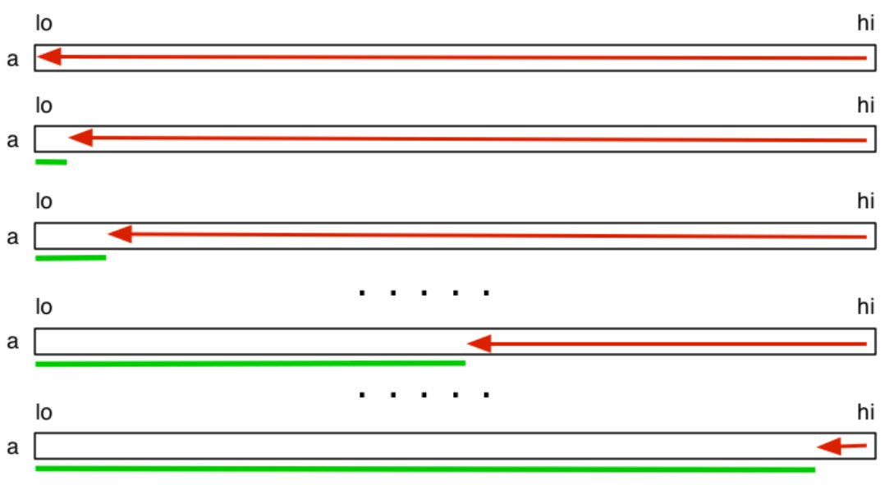
Insertion sort:
Logic: on each iteration, consider the element right next to the sorted segment. Bubble that element to the right place within the sorted array by comparing with elements in the already sorted segment.
- Grows from left to right, considering elements directly next to the end of the sorted array.
- Stability depends on implementation, adaptive if it stops scanning when the position is found
void insertionSort(int input[], int lo, int hi) {
for (int i = lo; i < hi; i++) {
for (int j = lo; j < i; j++) {
if (input[i] < input[j]) {
swap(input, i, j);
}
}
}
}
Time-complexity: O(n²)
Best case: the array is already sorted, so we just have 1 + 1 + ... + 1 comparisons (n)
Worst case: the array is reverse sorted, so we have a growing number of comparisons to find where to insert the new element in the sorted segment (same as for selection sort: n(n+1)/2)
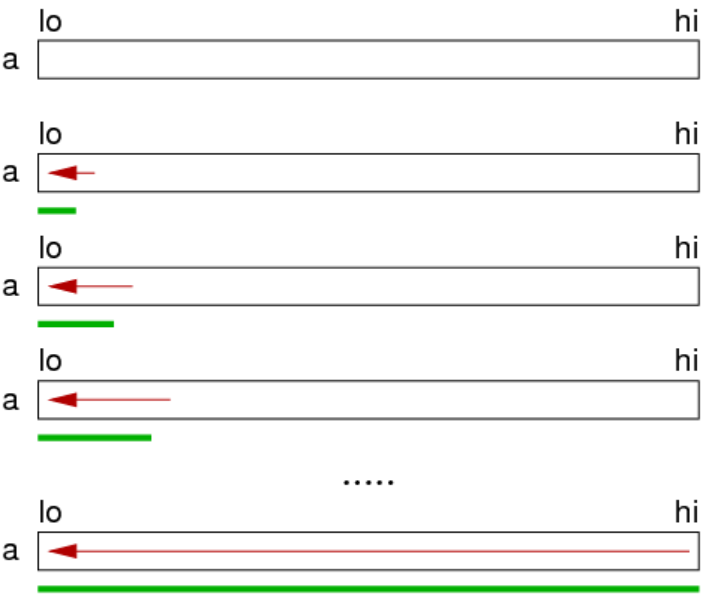
Shell sort:
Also known as h-sorting, which is an improvement on insertion sort.
A 3-sorted array means that if we take elements array[0], array[3], array[6], ..., they will be in order.
A 2-sorted array means that if we take elements array[0], array[2], array[4], ..., they will be in order.
A 1-sorted array means that the array is sorted
Algorithm uses a characteristic sequence of h-values. Such sequences are determined empirically, for example 1093, 364, 121, 40, 13, 4, 1, or something else
void shellSort(int a[], int lo, int hi) {
int hValues[8] = {701, 301, 132, 57, 23, 10, 4, 1}
for (int i = 0; i < 8; i++) {
int h = hValues[i];
int start = h + lo;
for (int n = start; n < hi, n++) {
int value = a[n];
for (int k = n; k >= start && value < a[k - h]; k -= h) {
move(a, k, k - h);
}
a[k] = value;
}
}
}
Efficiency depends on the h-values used, which we can achieve O(n^(3/2)) with, or even better with the right sequence. Shell sort has not yet been fully analysed.
Quick sort (recursive):
Logic: pick a pivot element, then sort the array such that everything to the left of that pivot is less than it while everything to the right is greater than it, and then start sorting left and right by the same function.
- Usually not stable and not adaptive
void quickSort(int input[], int lo, int hi) {
if (lo >= hi) return;
int i = partition(input, lo, hi);
quickSort(input, lo, i - 1);
quickSort(input, i + 1, hi);
}
In the partition function, we are finding the right spot to place the pivot element and swapping elements from left and right segments so that everything to the left of the pivot is less than it and everything to the right is greater than it
- Scan from the left, if the pivot encounters something greater than it, stop
- Scan from right, if the pivot encounters something less than it, stop
- Swap the elements which caused scanning to stop
- Continue the scanning from left, then scanning from right and swapping.
- Stop when the left and right scanners cross each other
- Swap the pivot element with where this intersection occurred
int partition(int input[], int lo, int hi) {
int pivotIndex = lo;
int i = lo + 1;
int j = hi;
while (1) {
while (input[i] < input[pivotIndex] && i < j) {
i++;
}
while (input[j] > input[pivotIndex] && i < j) {
j--;
}
if (i == j) break;
else swap(input, i, j);
}
j = (input[i] < input[pivotIndex]) ? i : i - 1;
swap(input, pivotIndex, j);
return j;
}
Time-Complexity: O(n²) — but the average case is usually better
Best case: the choice of pivot leads to equal partitions for each recursive step, so there will be log(n) levels, each level requiring n comparisons, hence O(nlogn)
Worst case: the choice of pivot leads to paritions of sizes 1 and (n-1) for each recursive step, so there will be n levels, requiring n comparisons, hence O(n²)
Eg. for sorted arrays, we will make n recursive calls, forming 1 and n-1 partitions
Partitioning steps:

Improving partition:
- Could select the pivot in other ways instead of taking the first element every recursive step
- Parititioning is inefficient when dealing with small partitions. We could solve small partitions differently by, for example, switching to insertion sort.
- If the array contains duplicates of the pivot value, we could 3 partitions with the middle one containing duplicates of pivot.
Quicksort can be implemented iteratively using a stack:
void quickSort(int input[], int lo, int hi) {
Stack s = newStack();
StackPush(s, hi);
StackPush(s, lo);
while (StackSize(s) > 0) {
int low = StackPop(s);
int high = StackPop(s);
if (high > low) {
int i = partition(input, lo, hi);
StackPush(s, hi);
StackPush(s, i + 1);
StackPush(s, i - 1);
StackPush(s, lo);
}
}
}
Merge sort (recursive):
Logic: **split the array into two equal partitions, sort each partition, then merge it into a final sorted array.
// Sorts to ascending order
void mergeSort(int input[], int lo, int hi) {
if (lo >= hi) return;
int mid = (lo + hi) / 2;
mergeSort(input, lo, mid);
mergeSort(input, mid + 1, hi);
merge(input, lo, mid, hi);
}
void merge(int a[], int lo, int mid, int hi) {
int i = lo;
int j = mid + 1;
int k = 0; // Indexer for temporary array
int tmp[hi - lo + 1]; // Temporary array to store sorted values
while (i <= mid && j <= hi) { // Scan through both segments, choosing the one that's less than the other
if (a[i] < a[j])
tmp[k++] = a[i++]; // Move the index of the left segment along
else
tmp[k++] = a[j++]; // Move the index of the right segment along
}
// One of the segments will still have elements that need to be copied over
while (i <= mid) tmp[k++] = a[i++];
while (j <= hi) tmp[k++] = a[j++];
// Copy the sorted dummy array into the main array
for (i = lo, k = 0; i <= hi; i++, k++)
a[i] = tmp[k];
}
Time-complexity: O(nlogn)
Best case: each level requires less than n comparisons when merging — O(nlogn)
Worst case: each level requires comparisons made all the way until the end of partitions — O(nlogn)
Space-complexity: O(N)

Mergesort can be implemented non-recursively, without a stack.
Bottom-up Mergesort (iterative):
void mergeSort(int a[], int lo, int hi) {
int end;
for (int m = 1; m <= lo - hi; m = m * 2) {
for (int i = lo; i <= hi - m; i += 2 * m) {
end = min(1 + 2 * m - 1, hi);
merge(a, i, i + m - 1, end);
}
}
}
Sorting lower bound of performance: any comparison-based sorting algorithm must take at least Ω(nlogn) time to sort n elements.
Proof. Suppose that we have a sequence of n unique values. There are n! permutations, where one sequence is ordered. For a binary decision tree, the height is at least log2(n!), so the number of comparisons required is log2(n!), which using inequalities, can be proven to be greater than nlogn. Hence Ω(nlogn) is the lower bound for all comparison based sorting algorithms.

Non-Comparison based sorting
Radix Sort:
Logic: sort the array by the last digit, then by the next and so on until the largest radix is sorted. At this point, the array is sorted. This works only if the implementation is stable
Time-complexity: O(mn) — where m is the number of radix points. This generally outperforms comparison based sorting algorithms when n → ∞
Week 9: Text Processing Algorithms
Notes:
- Alphabet Σ — defines the set of characters usable in strings
Empty string λ — string of length 0, ""
- Brute-force pattern matching involves comparing a substring to a chunk of the main text and only moving the chunk along by 1 after each iteration.
- Boyer-Moore's and Knuth-Morris-Pratt's pattern matching algorithms are like the brute force algorithm but they can compute a smarter jump length for each iteration
- Boyer-Moore works well for texts with large alphabets with a reasonable distribution of different characters.
Knuth-Morris-Pratt works well for texts with smaller alphabets (eg. DNA sequences).
Both algorithms aim to shift the text substring forward more intelligently than the brute-force approach
Boyer-Moore Algorithm:
Logic: compare the last character of the pattern to the corresponding character in the text. If mismatch, then check if that mismatching character from the text appears in the pattern. If it does, then jump forward a calculated amount. If it doesn't then jump by strlen(pattern) characters.
The Boyer-Moore algorithm requires some preprocessing using the last occurrence function: L : Σ → {0, 1, ..., m}
- Consider the string "acab"
L(a) = 2 → Although a also appears at index 0, we only want the last occurrence
L(b) = 3
L(c) = 1
L(d) = -1 → Setting to unused characters to -1 is important in computing the jump distance
...
L(z) = -1
- L maps each letter of the alphabet to the index where the character last occurred in the string. So when calculating the last occurrence index, it first has L(a) = 0 and then updates it to L(a) = 2 to record the last occurrence of a.
- Time-complexity: O(m+s) — where
m is the length of the string and s is the cardinality of the alphabet
Boyer-Moore algorithm:
int BoyerMooreMatch(char *text, char *pattern, char *alphabet) {
int i = m - 1;
int j = m - 1;
while (i < n) {
if (text[i] == pattern[j]) {
if (j == 0) {
return i;
} else {
i--;
j--;
}
} else {
i += m - min(j, 1 + L(text[i]));
j = m - 1;
}
}
return NO_RESULTS;
}
Time-complexity: O(nm + s)
Worst case: finding pattern "baaa" in "aaaaaaaa...aaa"
Case 1:
text[i] does not occur in the pattern string (so L(text[i]) is -1). Jump m - (1 + L(text[i])), which is the biggest jump possible — m characters
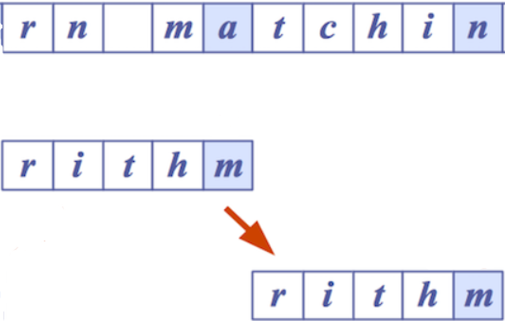
Case 2:
text[i]'s last occurrence in pattern is after j, so jump m - j characters

Case 3:
text[i]'s last occurrence in pattern is before j, so jump m - (1 + L(text[i])) characters
The mismatched text[i] is aligned with the same character found before j in the pattern
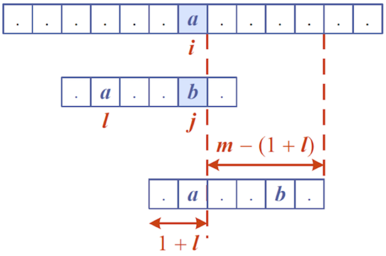
Knuth-Morris-Pratt Algorithm:
Failure function:
KMP also requires preprocessing on the pattern to find if prefixes occur in the rest of the pattern.
For each index j, find the longest prefix from 0 to j that matches the suffix in [1, j], up to and including index j, then record the function value as the number of characters in the prefix.
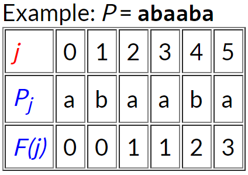
For j = 0: "a" — no prefix matches suffix — record F(0) = 0
For j = 1: "ab" — no prefix matches suffix — record F(1) = 0
For j = 2: "aba" — "a" works — record F(2) = 1
For j = 3: "abaa" — "a" works — record F(3) = 1
For j = 4: "abaab" — "ab" works — record F(4) = 2
For j = 5: "abaaba" — "aba" works — record F(5) = 3
Time-complexity: O(m)
Knuth-Morris-Pratt algorithm:
KMP scans from left to right, unlike Boyer-Moore.
int KMPMatch(char *text, char *pattern) {
int i = 0;
int j = 0;
int F[m];
failure(F, m);
while (i < n)) {
if (text[i] == pattern[j]) {
if (j == m - 1) {
return (i - j);
} else {
i++;
j++;
}
} else {
if (j > 0) {
j = F[j - 1];
} else {
i++;
}
}
}
return NO_MATCHES
}
Time-complexity: O(m + n) — O(m) for the failure function preprocessing and O(n) for scanning through the whole text
On mismatch, reset j to F(j - 1) if j > 0 and continue scanning. If j == 0, then just increment i and continue scanning
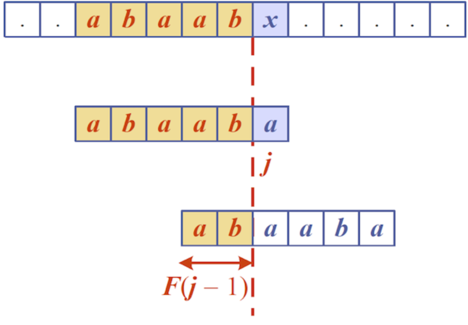
Tries:
A trie is a tree which holds a set of strings, like all the words in a text or a dictionary, and handles two main operations: search() and insert(). Trie's name comes from retrieval.
Boyer-Moore and Knuth-Morris-Pratt's algorithms preprocessed their pattern string. If the text is large, immutable and searched for often, like Hamlet, then we can preprocess the main text instead, allowing for quick pattern queries using the trie data structure.
The depth of a tree is equal to the longest string length.
Each node:
- Contains just one character
- Has 0-26 children
- May be marked as a terminating node (but can still have children) to identify that the node is the end of a complete recorded word
- Terminating nodes may also hold the line numbers/index of the word's occurrences in the text as a struct field
The number of words stored = the number of terminating nodes
Possible struct declaration:
#define ALPHABET_SIZE 26
typedef struct trieNode *Trie;
struct trieNode {
bool isLastChar;
char character;
Trie *children;
};
Trie findInTrie(Trie trie, char *target) {
char *ch;
Trie curr = trie;
for (ch = target; ch != '\0'; ch++) {
if (curr -> children[ch]) {
curr = curr -> children[ch];
} else {
return NULL;
}
}
if (curr -> isLastNode == true) {
return curr;
} else {
return NULL;
}
}
Trie insert(Trie trie, char *newWord, int length) {
Trie t;
if (trie == NULL) {
t = malloc(sizeof(struct trieNode));
t -> character = newWord[0];
}
if (m == 0) {
t -> finish = true;
t -> data = newWord;
} else {
t -> children[newWord[1]] = insert(trie, &newWord[1], length - 1);
}
return t;
}
Time-complexity: O(sm) — where m is strlen(target string) and s is the size of the alphabet. The time-complexity is independent of how many actual entries there are in the tree.
Space-complexity: O(n) — size of text (eg. total number of characters in each word in a dictionary)
Compressed Tries:
Compressing a trie involves collapsing linear branches into a single node:

Using 3-tuples, (i, j, k), we can encode a slice of strings for collapsed linear branches.
So (8, 2, 3) navigates to the 8th word and then takes the slice of S[8] from index 2 to 3

Compressed Suffix Tries — For pattern matching:
Insert all suffixes of a given word as separate entries into a trie and then compress it.
For example, for "minimize":
Insert all suffixes: "e", "ze", "ize", ..., "minimize" into a regular trie, then compress.
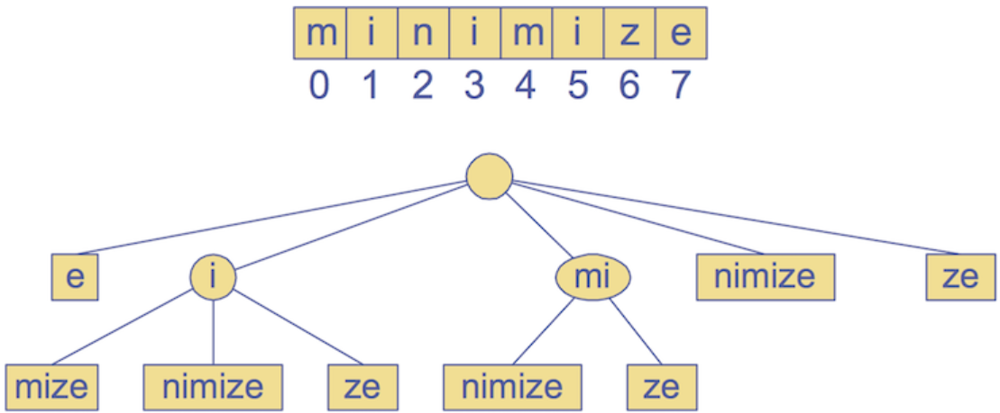
2-tuples representing slices of the text, "minimize"

For constructing the suffice tree:
Time-complexity: O(n) —
Space-complexity: O(n) —
Pattern matching:
Time-complexity: O(ms) — where m is the length of the pattern and s is the size of the alphabet
Text Compression — Huffman's Algorithm:
Text compression revolves around the problem: "can we efficiently encode a string X with a smaller string Y?"
Lossy compression: a class of irreversible data compression methods using approximations and partial data discarding to represent the content, causing a loss of quality/resolution.
- For MP3, there are certain frequencies that aren't human detectable so we can remove the bits encoding those frequencies
- JPG is a lossy compression method for digital images. We can reduce the colour encoding size — meaning that for heavier compressions, the difference between colours is less fine because the colour encoding capability is made smaller since we've reduced the amount of bits available to encode each pixel's colour
Huffman's algorithm:
Huffman's algorithm provides a lossless text compression system. It defines bit-codes for characters such that each bit code is not a prefix for any other bit code, which is crucial for navigating the Huffman encoding tree.
Higher frequency characters are assigned shorter bit codes.
- Go through entire text and calculate the frequency of every character
Build the encoding tree:
→ Initially have single nodes representing each character in the text
→ Merge the two lowest frequency characters into a single cluster
→ Repeat the process until a full tree is created

The path to a leaf node corresponds to a bit-code
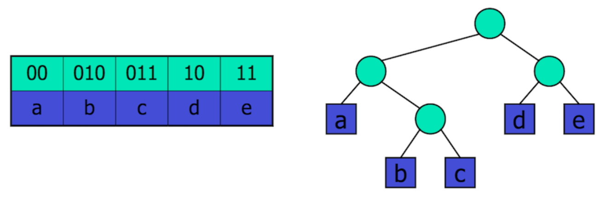
Tree createTree(char *text) {
int frequencies[ALPHABET_SIZE];
computeFrequencies(frequencies, text);
PQueue pqueue = newPQueue();
for (char c = 'a'; c <= 'z'; c++) {
if (frequencies[c] != 0) {
Tree t = malloc(sizeof(struct treeNode));
t -> freq = frequencies[c];
t -> left = NULL;
t -> right = NULL;
PQueueJoin(queue, t);
}
}
while (QueueSize(queue) >= 2) {
t1 = PQueueLeave(queue);
t2 = PQueueLeave(queue);
freq1 = t1 -> freq;
freq2 = t2 -> freq;
Tree t = malloc(sizeof(struct treeNode));
t -> freq = freq1 + freq2;
t -> left = t1;
t -> right = t2;
PQJoin(queue, t);
}
return PQLeave(queue);
}
Time-complexity: O(n + slogs) — for computing frequencies, creating nodes for each occurring character and building the encoding tree, where s is number of unique characters
Switch-case statements:
A nicer alternative to a series of else if statements
switch (expression) {
case constant1:
break;
case constant2:
break;
...
default:
}
Ternary conditional operators:
Resolves to one value if the condition is true, or resolves to another if the condition is false:
int x = 1, y;
y = (x == 1 ? 0 : 1); // Assigns y to be 0, since x == 1 is true. Syntax: y = (condition ? trueValue : falseValue)
Compilation and Makefiles:
The separation between .h and .c files is crucial and will be used extensively in implementing abstract data types
- Compilers are programs that convert source code to executable machine code
gcc — Gnu C compiler, a multi-purpose tool that compiles (-c), links and produces executables (-o)
- Compilation steps:
- Preprocessing phase — for preprocessor directives like #define, the compiler replaces all macros with their associated value
- Compiles source code to produce object files
- Object files and libraries are linked to produce the final executable file

gcc -c Stack.c
gcc -c bracket.c
gcc -o rbt bracket.o Stack.o
- Include directive:
The #include preprocessor directive is used to paste code into the current flower.
#include <stdio.h> — the <> tells the compiler to search for header files in the System Libraries
#include "myfile.h" — the "" tells the compiler to search for header files in the current directory
Header files vs .c file is like the interface vs. implementation
#include preprocessor directive is used to paste code of given file into current file.- For example #include : These directives tell the c processor to get stdio.h from System Libraries and add the text to the current source file.
Makefile:
Allows us to see dependencies in our code and conveniently compile using the make command
target : source1 source2 …
commands to build target from sources
# Example:
game : main.o graphics.o world.o # These sourcese are dependencies
gcc -o game main.o graphics.o world.o
Function Pointers:
Function pointers are the memory address of functions.
Function pointer declaration: int (*fp) (int) — fp points to a function that returns an int and has one argument of type int
int square(int x) {
return x * x;
}
int timesTwo(int x) {
return x * 2;
}
int (*funcPointer) (int);
fp = □
int n = (*fp)(10);
fp = timesTwo;
n = (*fp)(2);
n = fp(2);
Higher-order functions: functions that has function pointers as arguments or returns function pointers
void traverse (List head, void (*fp) (List)) {
List curr = head;
while (curr != NULL) {
fp(curr);
curr = curr -> next;
}
}
void printName (List head);
void printZID (List head);
...
traverse(studentList, printName);
traverse(studentList, printZID);
Generic Types:
Polymorphism: ability of the same code to operate on different data types
- Parametric polymorphism: generic function parameters — a function argument that can accept multiple data types
- Subtype polymorphism: associated with inheritance hierarchies
void pointers allow generic data types. By declaring values of type void , we could pass those values into functions which downcast the void pointers to the correct type before operating on them. In object-oriented programming, downcasting or type refinement is the act of casting a reference of a base class to one of its derived classes.
GDB